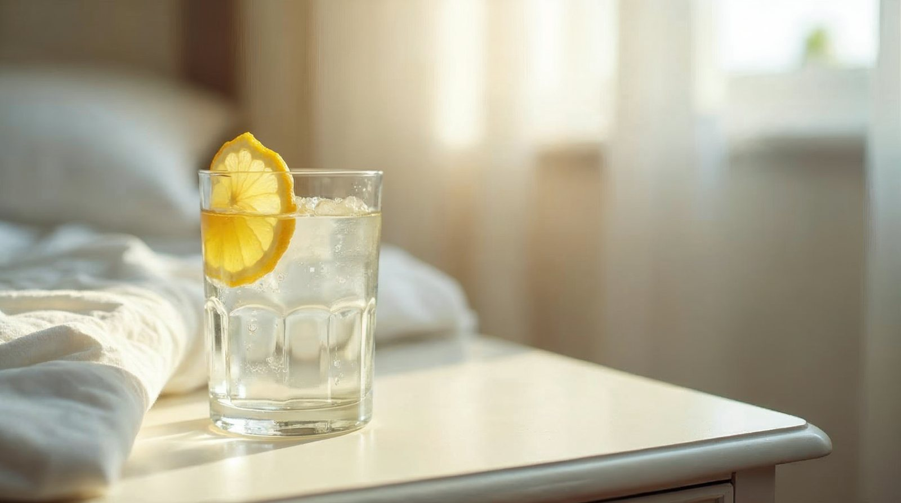
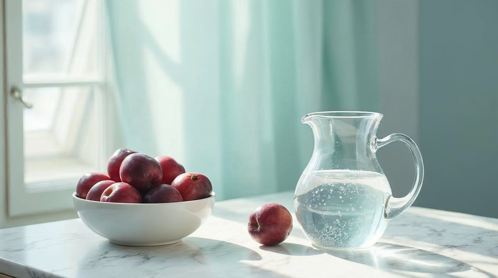
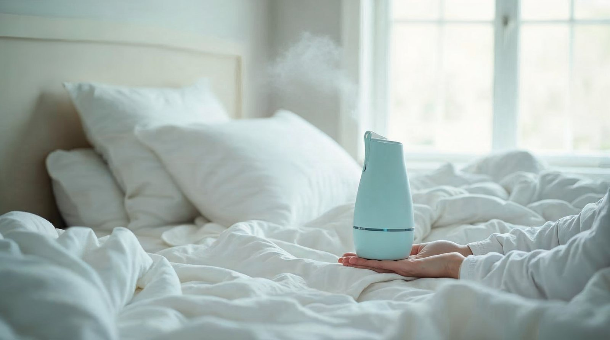
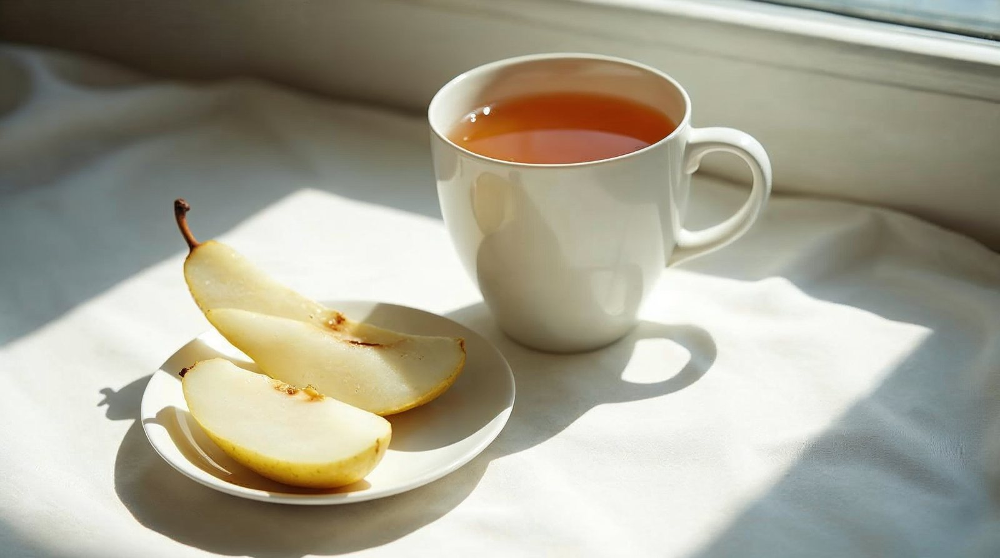
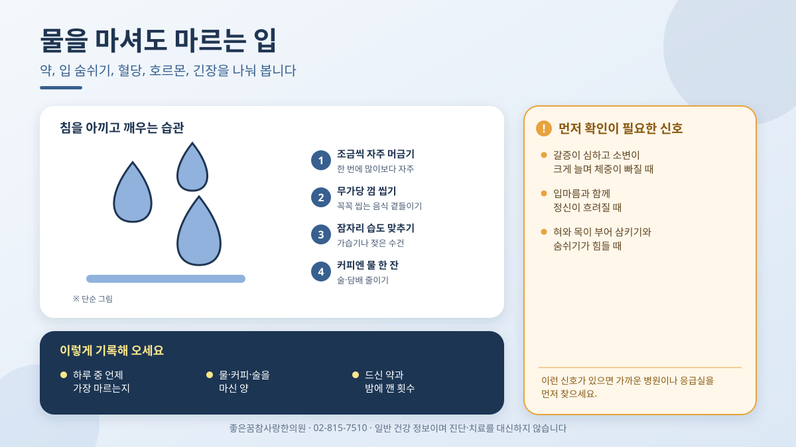

이종호 한의사 감수좋은꿈참사랑한의원 대표원장 (한의사 면허번호 19769)발행 2026-11-26 · 수정 2026-11-26
이 글의 차례
새벽에 목이 말라 잠에서 깹니다. 혀가 입천장에 달라붙어 있고, 침을 삼키려 해도 넘어갈 것이 없습니다. 머리맡의 물병을 들어 한 모금 마시고 다시 누워 보지만, 한두 시간 뒤면 또 같은 일이 반복됩니다. 아침에 일어나면 입안이 텁텁하고 목소리도 갈라져 있습니다.
진료실에서 "물을 그렇게 마시는데도 입이 말라요"라고 말씀하시는 분을 자주 뵙습니다. 가방에 늘 물병을 넣어 다니고, 회의 중에도 사탕을 물고 있어야 말을 이어갈 수 있다고 하십니다. 사소해 보이는 불편이지만 하루 종일 따라다니니 지치실 수밖에 없습니다.
침은 생각보다 많은 일을 합니다. 음식을 적셔 씹고 삼키기 쉽게 하고, 맛을 느끼게 하고, 입안을 씻어 충치와 잇몸 병을 막고, 말을 부드럽게 해 줍니다. 그래서 침이 줄면 입마름 하나로 끝나지 않고 맛, 입냄새, 충치, 삼킴, 잠까지 함께 흔들리기 쉽습니다.
입마름을 의학에서는 구강건조증이라고 부릅니다. 실제로 침의 양이 줄어든 경우도 있고, 침은 어느 정도 나오는데 입이 마른 느낌이 큰 경우도 있습니다. 저는 어느 쪽인지, 그리고 무엇이 침을 줄이고 있는지를 함께 나눠 보는 것부터 시작합니다.

입마름은 어떤 모습으로 나타나나요?
입이 마르는 느낌은 사람마다 조금씩 다르게 표현됩니다. 입안이 끈적끈적하다, 혀가 입천장에 붙는다, 마른 음식을 삼키기 어렵다, 말을 오래 하면 입이 바짝 탄다, 아침에 일어나면 입안이 텁텁하다. 모두 침이 부족하거나 입안이 건조해졌다는 신호입니다.
입마름이 이어지면 다른 변화도 따라옵니다. 입냄새가 늘고, 맛이 밍밍하거나 쓰게 느껴지며, 입술이 갈라지고 입꼬리가 헐기도 합니다. 충치가 갑자기 늘었다는 말을 치과에서 듣는 분도 계십니다.
입마름이 하루 중 언제 심한지도 중요한 단서입니다. 밤과 아침에 심하다면 잠든 동안 입으로 숨을 쉬는지를, 낮에 심하다면 드시는 약과 물, 긴장을 먼저 살핍니다. 하루 종일 이어진다면 몸 전체의 변화를 함께 봅니다.
왜 입이 마를까요?
가장 흔한 원인은 드시는 약입니다. 혈압약 가운데 일부, 이뇨제, 항우울제와 불안을 줄이는 약, 알레르기약과 콧물약, 방광을 진정시키는 약, 진통제 일부가 침을 줄일 수 있습니다. 여러 약을 함께 드실수록 입마름이 커지기 쉽습니다.
입으로 숨 쉬는 습관도 큰 몫을 합니다. 비염이나 코막힘이 있으면 잠든 동안 입이 벌어져 밤새 입안이 마르고, 코골이가 있는 분은 아침마다 입안이 바싹 말라 있다고 말씀하십니다. 낮에도 집중할 때 입을 벌리고 있는 버릇이 있는지 살펴봅니다.
몸 전체의 변화도 입마름으로 드러납니다. 혈당이 높게 이어지면 소변으로 물이 많이 빠져나가 입이 마르고 물을 자주 찾게 됩니다. 갑상선 기능의 변화, 폐경 전후의 호르몬 변화, 눈과 입이 함께 마르는 쇼그렌 증후군 같은 면역 질환도 침을 줄일 수 있습니다.
나이가 들면서 침샘의 일도 조금씩 줄어듭니다. 여기에 물을 적게 마시는 습관, 커피와 술, 담배, 건조한 실내 공기가 겹치면 입마름이 더 크게 느껴집니다. 어르신의 입마름은 드시는 약이 여러 가지인 경우가 많아서 약을 꼭 함께 확인합니다.
긴장과 불안도 침을 줄입니다. 발표나 면접을 앞두고 입이 바싹 말랐던 경험이 있으시다면, 몸이 긴장하면 침샘이 쉬어 버린다는 것을 이미 느껴 보신 셈입니다. 긴장이 오래 이어지는 생활에서는 입마름도 함께 길어지기 쉽습니다.
비슷해 보이지만 다른 불편과는 어떻게 다른가요?
목마름은 몸에 물이 모자라 물을 찾는 느낌이고, 입마름은 입안이 건조한 느낌입니다. 물을 마셔도 금방 다시 마르고 입안만 텁텁하다면 입마름 쪽을, 물을 벌컥벌컥 많이 마시고 소변도 많다면 몸 전체의 물과 혈당 쪽을 먼저 살핍니다.
구강작열감은 입안이 데인 듯 화끈거리는 것이 중심이고, 입마름은 건조함이 중심입니다. 둘이 함께 오는 분이 많아서 화끈거림이 있는지 꼭 함께 여쭙니다.
목이 칼칼하고 따가운 느낌은 목 자체의 염증이나 코 뒤로 넘어가는 콧물 때문일 수도 있습니다. 입안 전체가 마른 것인지, 목구멍 쪽만 불편한 것인지를 나눠 말씀해 주시면 도움이 됩니다.
한의학에서는 입마름을 어떻게 보나요?
한의학에서는 몸을 적셔 주는 수분을 진액이라고 부르고, 입마름을 진액이 부족하거나 위로 잘 올라오지 못하는 상태로 봅니다. 혀가 붉고 설태가 적으며 갈라짐이 있다면 진액이 줄고 열이 남은 쪽으로, 혀가 희고 축축한데도 입이 마르다면 수분이 고루 돌지 못하는 쪽으로 보는 경우가 많습니다.
같은 입마름이라도 얼굴로 열이 오르고 손발바닥이 화끈거리며 잠이 얕은 분이 있고, 손발이 차고 쉽게 지치며 소화가 약한 분이 있습니다. 저는 입안의 느낌과 함께 이런 몸 전체의 흐름을 같이 읽습니다.
이런 살핌은 혈액 검사나 침샘 검사를 대신하는 것이 아닙니다. 약과 혈당, 면역 질환 같은 원인을 먼저 확인하고, 그 위에서 몸의 열과 수분의 균형, 잠과 긴장을 함께 살피는 방법이라고 생각해 주시면 됩니다.

입마름을 두고 자주 헷갈리는 것
첫째, 물을 많이 마시면 해결된다는 생각입니다. 물은 당연히 중요하지만, 침이 줄어든 원인이 그대로라면 물만으로는 금방 다시 마릅니다. 한꺼번에 많이 마시기보다 조금씩 자주 머금는 편이 입안을 촉촉하게 지키기 쉽습니다.
둘째, 사탕이나 단 음료로 입을 적시는 경우입니다. 잠시 침이 돌아 편할 수 있지만, 침이 적은 입안에서는 당분이 오래 머물러 충치가 생기기 쉽습니다. 사탕이나 껌은 무가당으로 고르시길 권합니다.
셋째, 나이가 들면 당연한 일이라 어쩔 수 없다는 생각입니다. 나이에 따른 변화도 있지만, 약과 습관, 잠, 실내 공기처럼 바꿀 수 있는 부분이 함께 얽혀 있는 경우가 많습니다.

계절과 생활에 따라 달라지는 입마름
겨울에는 난방으로 실내 공기가 건조해지고 물을 덜 마시게 되면서 입마름이 심해지는 분이 많습니다. 여름에는 땀으로 물이 빠지고 에어컨 바람이 입안을 마르게 합니다. 계절마다 실내 습도를 한 번씩 확인해 보세요.
말을 많이 하는 일을 하시는 분, 마스크를 오래 쓰는 분, 운전처럼 긴장한 채 오래 앉아 있는 분은 오후로 갈수록 입이 마르기 쉽습니다. 일하는 중간중간 물을 머금는 시간을 미리 정해 두시면 도움이 됩니다.
식사 습관도 침과 관련이 있습니다. 부드러운 음식만 빨리 넘기면 침샘이 일할 기회가 줄어듭니다. 나물이나 현미처럼 꼭꼭 씹어야 하는 음식을 한두 가지 곁들이고, 한 입에 여러 번 씹는 습관을 들이면 식사 시간이 침샘을 깨우는 시간이 됩니다.
잠이 짧거나 얕은 생활도 입마름을 키웁니다. 잠이 모자라면 몸이 긴장한 상태로 하루를 보내고, 밤에는 자주 깨면서 입이 마른 것을 더 자주 느끼게 됩니다. 잠드는 시각을 일정하게 맞추는 것이 입마름 관리의 한 부분이 되기도 합니다.
먼저 이렇게 여쭙니다
처음 오시면 대략 이런 순서로 여쭙니다. 미리 떠올려 오시면 이야기가 수월해집니다.
- 입마름은 언제부터, 낮과 밤 가운데 언제 더 심한가요?
- 하루에 물은 얼마나, 커피와 술은 얼마나 드시나요?
- 코막힘이나 코골이, 잠든 동안 입을 벌리는 버릇이 있나요?
- 눈도 함께 마르거나, 관절이 붓고 아픈 일이 있나요?
- 소변을 자주 보거나 물을 유난히 많이 찾게 되었나요?
- 드시는 약과 영양제는 무엇이 있나요?
모든 질문에 정확히 답하지 못하셔도 괜찮습니다. 드시는 약 봉투를 모두 챙겨 오시고, 언제 가장 마른지만 떠올려 오셔도 이야기의 절반은 시작된 셈입니다.
일상에서 먼저 해 볼 수 있는 것
침을 아끼고, 입안을 촉촉하게 지키고, 침샘이 일할 기회를 늘리는 것이 첫걸음입니다. 하나씩 골라 일주일씩 해 보세요.
- 물은 한 번에 많이보다 한두 모금씩 자주 머금기
- 무가당 껌을 천천히 씹거나 신맛이 약한 과일 한 조각으로 침 돌게 하기
- 잠자리에 가습기를 두거나 젖은 수건 널어 두기
- 커피, 술, 담배 줄이고, 커피 한 잔에 물 한 잔 함께 마시기
- 알코올 가글 대신 순한 가글이나 물로 헹구기
- 음식을 천천히 오래 씹어 침샘이 일하게 하기
잠든 동안 입이 벌어지는 분은 코를 먼저 살펴보시길 권합니다. 코막힘이 있다면 그 부분을 함께 다루는 것이 밤사이 입마름을 줄이는 길이 됩니다. 옆으로 누워 자면 입 벌림과 코골이가 줄기도 합니다.
귀 앞쪽 볼과 턱 아래를 손가락으로 부드럽게 원을 그리며 문질러 주는 것도 방법입니다. 침샘이 있는 자리라서, 식사 전에 1~2분 문질러 주면 침이 도는 데 도움이 될 수 있습니다.
입술과 입꼬리가 갈라진다면 순한 립밤을 자주 발라 주세요. 침이 적은 시기에는 치과 정기 검진을 조금 더 자주 받고, 불소가 든 치약을 쓰는 것도 충치를 막는 데 도움이 됩니다. 틀니를 쓰신다면 밤에는 빼서 잇몸을 쉬게 해 주세요.
한의원에서 함께 살필 수 있는 경우
- 약과 혈당을 확인했는데도 입마름이 오래 이어지는 경우
- 입마름과 함께 얼굴로 열이 오르고 잠이 얕은 경우
- 폐경 전후로 입과 눈이 함께 마르고 몸의 열감이 느껴지는 경우
- 긴장하거나 피곤한 날 입마름이 유독 심해지는 경우
- 코막힘과 입으로 숨 쉬는 습관 때문에 아침마다 입이 마른 경우
좋은꿈참사랑한의원에서는 모든 분께 그렇듯 맥부터 짚으며 아래 '먼저 확인이 필요한' 신호가 없는지 여쭙고, 혀와 입안의 촉촉한 정도를 함께 봅니다. 혀의 색과 갈라짐, 설태의 두께를 살피고, 코와 목, 턱 주변의 긴장도 함께 확인합니다.
진찰한 내용을 바탕으로 침, 한약 상담, 생활 관리 가운데 지금 상태에 맞는 것을 정하고, 물 마시는 습관과 잠, 실내 공기 가운데 바꿔 볼 것 하나를 함께 고릅니다. 코막힘이 있다면 그 부분도 함께 살핍니다. 한약을 상의할 때는 드시는 약을 모두 확인하고 신중하게 정합니다.
드시는 약이 입마름의 원인으로 보인다면 혼자 끊지 마시고 처방한 선생님과 상의해 주세요. 약을 바꾸거나 시각을 조정해 나아지는 경우도 있습니다. 혈당이나 면역 질환이 의심된다면 내과나 류마티스내과 진료를 함께 받으시도록 권합니다.
이렇게 기록해 오시면 상담이 쉬워집니다
입마름은 하루 중 흐름과 생활의 연결이 큰 단서가 됩니다. 1~2주만 간단히 적어 보세요.
- 아침, 점심, 저녁, 밤의 입마름 세기(0~10)
- 하루에 마신 물, 커피, 술의 양
- 밤에 목이 말라 깬 횟수, 코골이나 입 벌림 여부
- 드신 약과 드신 시각
- 긴장했거나 말을 많이 한 날 표시
- 눈마름, 잦은 소변처럼 함께 있었던 변화
기록을 나란히 놓고 보면 입마름이 심했던 날과 덜했던 날의 차이가 보이기 시작합니다. 커피를 많이 마신 날, 잠을 설친 날, 말을 많이 한 날과 입마름 사이의 연결이 다음에 바꿔 볼 생활을 알려 줍니다. 약을 새로 시작하거나 바꾼 날이 있다면 꼭 표시해 두세요. 그 전후로 입마름이 어떻게 달라졌는지가 처방한 선생님과 상의할 때도 좋은 자료가 됩니다.

늘 물병을 들고 다니시는 분께
입마름은 큰 병처럼 보이지 않아서 오래 참고 지내시는 경우가 많습니다. 하지만 맛과 잠, 말하는 일, 치아 건강까지 함께 흔들 수 있는 불편이니 진료실에서 충분히 이야기할 만한 일입니다. 물병 없이 외출하기가 불안하셨던 마음도 함께 말씀해 주세요.
입마름은 하루아침에 달라지기보다, 밤에 깨는 횟수가 줄고 물병을 찾는 간격이 조금씩 길어지는 모양으로 변하는 경우가 많습니다. 이번 주에는 물을 조금씩 자주 머금기와 잠자리 습도 맞추기 가운데 하나만 골라 보세요. 다음에 오시면 그 기록을 함께 펼쳐 보겠습니다.
이런 증상은 먼저 확인이 필요합니다
- 물을 아무리 마셔도 갈증이 심하고 소변이 크게 늘거나, 이유 없이 체중이 빠지는 경우
- 입마름과 함께 정신이 흐려지거나, 혀·목이 붓거나 삼키기·숨쉬기가 힘든 경우
이런 신호가 있으면 한의원보다 가까운 병원이나 응급실을 먼저 찾으세요.
함께 읽으면 좋은 글
- 양치를 해도 입냄새가 신경 쓰일 때, 입·코·속의 원인은 어떻게 나눠 살피나요?
- 혀 가장자리의 이 자국과 혀의 갈라짐은 무엇을 살피는 단서인가요?
- 당뇨 전단계·공복혈당장애라는 말을 들었을 때 무엇부터 살피나요?
- 목 뒤로 콧물이 넘어가서 자꾸 헛기침을 하게 될 때는 어떻게 살피나요?
- 혀에 하얗거나 노란 막이 끼는 설태는 무엇을 뜻하나요?

여쭙는 것
- 입마름은 언제부터, 낮과 밤 가운데 언제 더 심한가요?
- 하루에 물은 얼마나, 커피와 술은 얼마나 드시나요?
- 코막힘이나 코골이, 잠든 동안 입을 벌리는 버릇이 있나요?
생활에서 해 볼 것
- 물은 한 번에 많이보다 한두 모금씩 자주 머금기
- 무가당 껌을 천천히 씹거나 신맛이 약한 과일 한 조각으로 침 돌게 하기
- 잠자리에 가습기를 두거나 젖은 수건 널어 두기
한의원에서 함께 살필 것
- 약과 혈당을 확인했는데도 입마름이 오래 이어지는 경우
- 입마름과 함께 얼굴로 열이 오르고 잠이 얕은 경우
- 폐경 전후로 입과 눈이 함께 마르고 몸의 열감이 느껴지는 경우
먼저 확인이 필요한 신호
- 물을 아무리 마셔도 갈증이 심하고 소변이 크게 늘거나, 이유 없이 체중이 빠지는 경우
- 입마름과 함께 정신이 흐려지거나, 혀·목이 붓거나 삼키기·숨쉬기가 힘든 경우
한눈에 보는 표
| 구분 | 핵심 |
|---|---|
| 여쭙는 것 | 입마름은 언제부터, 낮과 밤 가운데 언제 더 심한가요? 하루에 물은 얼마나, 커피와 술은 얼마나 드시나요? |
| 생활에서 해 볼 것 | 물은 한 번에 많이보다 한두 모금씩 자주 머금기 무가당 껌을 천천히 씹거나 신맛이 약한 과일 한 조각으로 침 돌게 하기 |
| 한의원에서 함께 살필 것 | 약과 혈당을 확인했는데도 입마름이 오래 이어지는 경우 입마름과 함께 얼굴로 열이 오르고 잠이 얕은 경우 |
| 먼저 확인이 필요한 신호 | 물을 아무리 마셔도 갈증이 심하고 소변이 크게 늘거나, 이유 없이 체중이 빠지는 경우 입마름과 함께 정신이 흐려지거나, 혀·목이 붓거나 삼키기·숨쉬기가 힘든 경우 |
자주 묻는 질문
물을 하루에 많이 마시는데도 입이 마르는 이유는 무엇인가요?
침을 줄이는 약, 입으로 숨 쉬는 습관, 혈당, 호르몬 변화, 긴장처럼 침샘 쪽 원인이 그대로라면 물만으로는 금방 다시 마를 수 있습니다. 원인을 나눠 함께 살핍니다.
드시는 약 때문에 입이 마르는 것 같으면 끊어도 되나요?
혼자 끊지 마시고 처방한 선생님과 먼저 상의해 주세요. 약을 바꾸거나 드시는 시각을 조정해 나아지는 경우가 있습니다.
입이 마를 때 사탕을 먹어도 되나요?
침이 적은 입안에서는 당분이 오래 머물러 충치가 생기기 쉽습니다. 무가당 사탕이나 껌을 고르시고, 물을 조금씩 자주 머금는 습관을 함께 들이시길 권합니다.
눈과 입이 같이 마르면 무엇을 확인해야 하나요?
눈과 입이 함께 오래 마른다면 면역 질환이 있는지 내과나 류마티스내과에서 확인해 보시길 권합니다. 한의원에서는 그와 함께 몸의 열과 수분의 균형, 잠을 살펴봅니다.
좋은꿈참사랑한의원은 재진 때 지난번 이야기부터 이어서 여쭙니다. 진료시간과 예약은 오시는 길에서 확인하세요.
어디서 상담받을 수 있나요?
좋은꿈참사랑한의원은 서울 동작구 만양로2길 2 신성빌딩 3층·5층(서울 동작구 상도동, 7호선 상도역 3번 출구 근처)에 있습니다. 한의사 3명(이종호 대표원장, 조영기 수석진료원장, 정원영 진료원장)이 진료합니다. 진료시간은 평일 09:30~20:00(점심 13:00~14:00), 토·일·공휴일 09:30~15:00이며, 방문 전 전화로 확인을 권합니다. 예약은 네이버 예약, 카카오톡 상담, 전화 02-815-7510로 받습니다.
이 글은 일반적인 건강 정보이며 개인의 진단이나 치료를 대신하지 않습니다. 증상이 있거나 복용 중인 약이 있다면 진료를 통해 확인하세요. 치료 효과는 개인마다 다를 수 있습니다.
작성 기준: 일반적으로 알려져 있는 건강 정보를 참고해 정리했습니다(대표원장 감수). 증상 기록은 1~2주 동안 하루 1회, 비슷한 시간에 적어 오시면 지난 상태와 비교하기 쉽습니다.